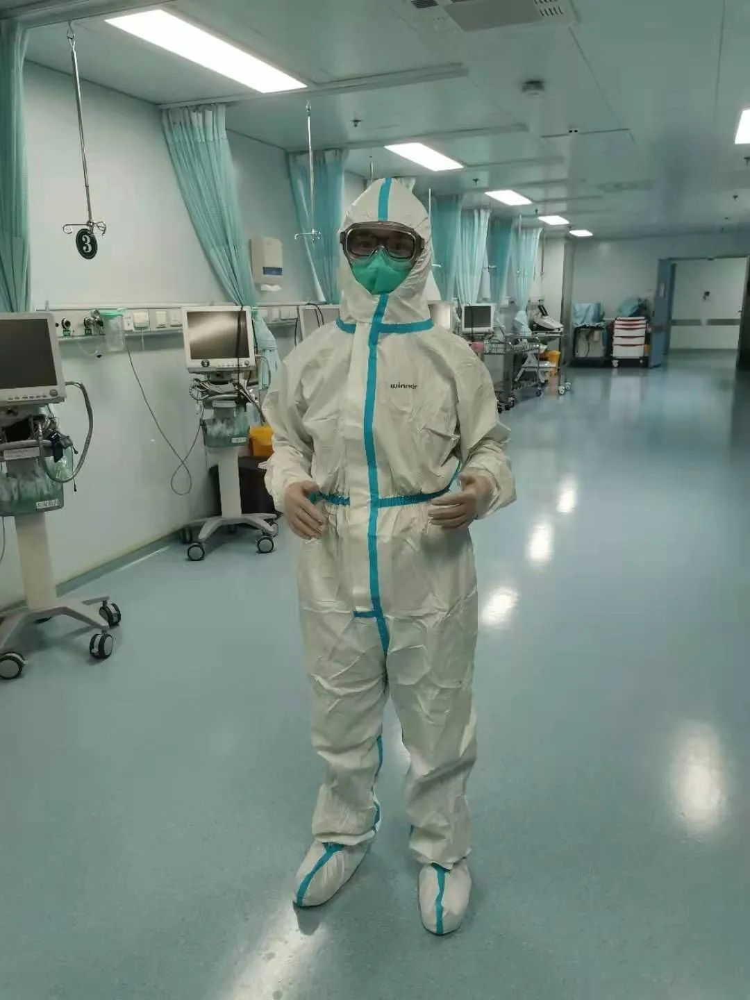
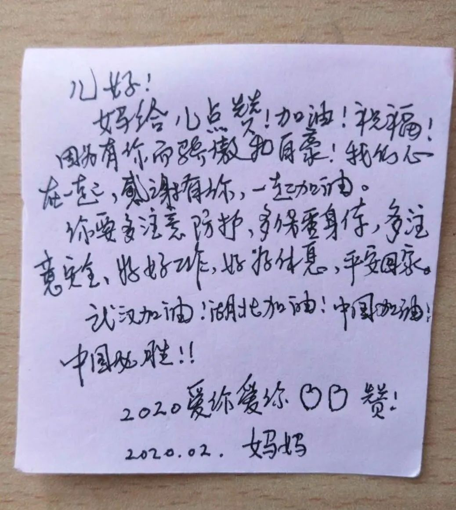
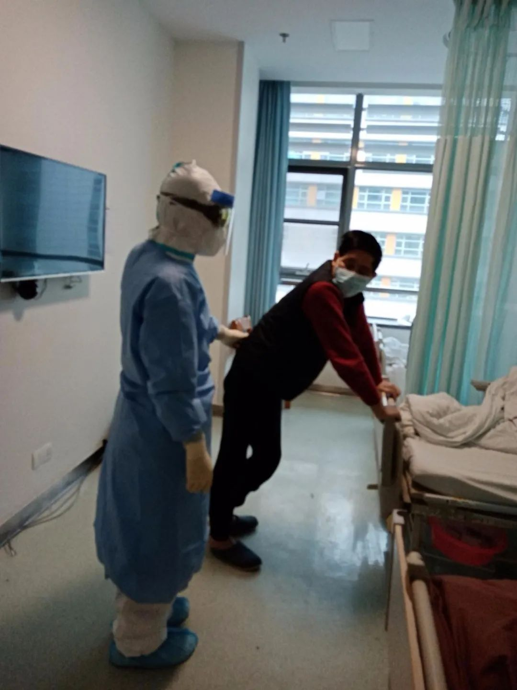
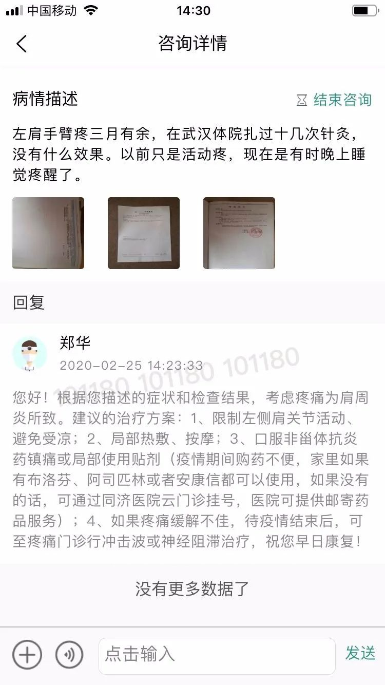
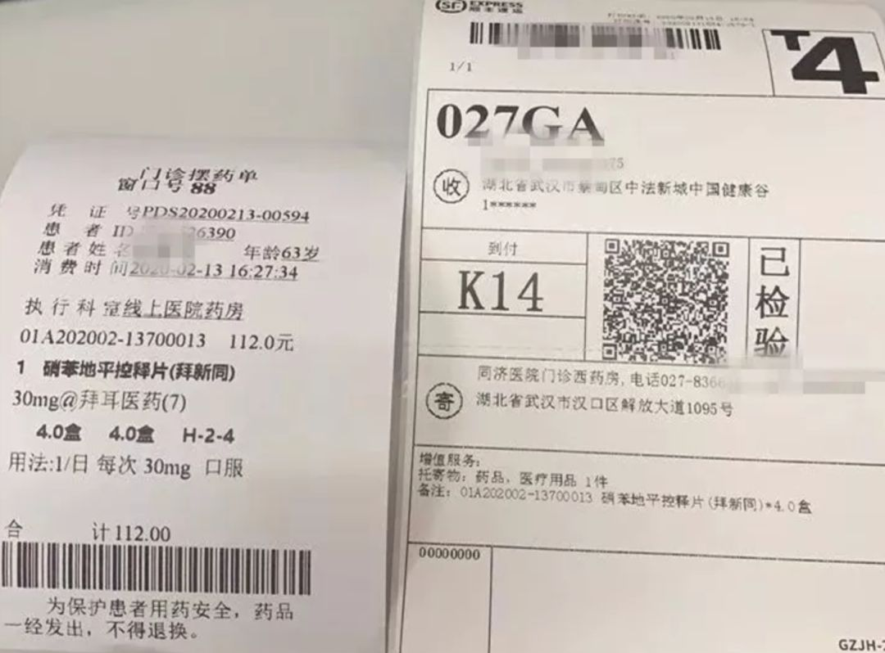
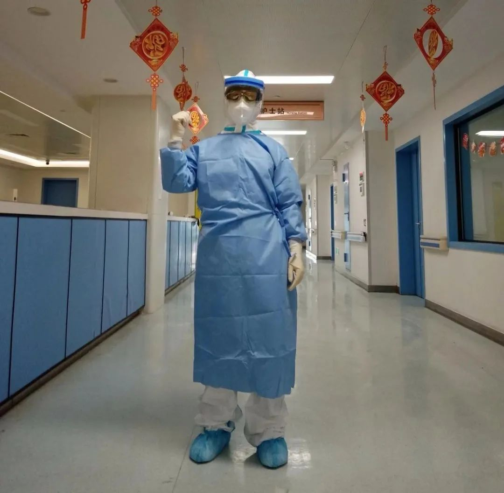

口述实录 | 我在武汉方舱医院14天，有了一种胜利在望的感觉
原文链接 备份链接 从2月7日到现在，一方面大家的活动越来越丰富，另一方面由于轻症患者比较多，人们病情都慢慢恢复。所以，我看到每个人脸上的笑容都变多了。 口述 | 余 毅 整理 | 王仲昀 这一个月终于要过去了。 2月21日上午，在等待几 …

作为一名医生，我十分清楚在每一个新冠肺炎患者背后，都有一个备受煎熬的家庭，这个坎能不能过去，需要大家一起扛。而随着武汉封城时间越来越长，一些非新冠肺炎的病患，同样也在默默承受着煎熬。
口述 | 郑 华
整理 | 吴 雪
早上八点，我下夜班，接班的同事准点到了，我嘱咐好病房负责的病人，满身疲惫地走进医院的更衣室，脱掉防护服，摘掉护目镜，深呼了一大口气。许久未关注医院窗外的风景，树木仿佛发出了新芽。作为华中科技大学附属同济医院麻醉科的一名医生，2月29日，是我返岗的第9天，工作时间与新冠病毒赛跑“抢人”，休息时间看诊非新冠病人，已成为我近一周的常态。

穿着防护服的郑华在华中科技大学附属同济医院病区 受访者供图
回想这一个月以来，我内心的煎熬、希望、纠结，全部搅合在一起，一刻也没停下来过。我平时工作很忙，春节假期，本打算好好陪陪家人。但1月24日，疫情暴发了，我第一时间决定放弃休假返岗，家人也很支持。你问我为什么2月中旬才返回工作岗位，因为还没上岗的1月28日，意外情况发生了。
那天，我爱人突然发烧了，量了体温不到38℃，不算高烧。当时并不能确定是新冠肺炎，但鉴于病毒的不确定性以及作为医生的职业敏感，我当机立断：不管怎样，都必须隔离。我和岳母腾出手来整理了带有洗手间的主卧，第一天就让爱人隔离了进去，上了锁。我有两个孩子，一个7岁，一个3岁，刚开始他们并不理解，哭着闹着非要拧开门把手找妈妈。后来，视频了几次，孩子没辙，也只能安生了。
爱人隔离以后，我们开始对症处理，吃退烧药降温。一日三餐之前，我都会通过微信或者视频连线通知开饭，把饭菜装进饭盒，放在门口，那种滋味基本和“坐监”差不多。第二天，体温一下子蹿到了高烧39℃，而且总是反反复复，下午和晚上特别明显。还好，爱人性格开朗，凡事想得开，心态也比较好。

2月18日，华中科技大学附属同济医院中法新城院区的护士正在交班 图｜新华社
2月3日，反复高烧到第7天，爱人一直没有好转，我着急了。决定带她去到医院门诊拍CT。果然，CT结果显示双肺感染，高度疑似新冠肺炎。当时医院床位紧缺，同事们已经疲累应战，虽然检查是在我工作的医院，但我并不想去打扰他们，当天我就带爱人回家了。2月4日，医院通知其中一个分院改成了定点收治医院，爱人可以入院。
我收拾了生活必需品，开车送爱人前往，当时驰援的团队是山东省医疗队，照顾非常周到。虽然一路上戴了口罩，也做了防护，但为了安全起见，把爱人安置好后，我决定暂不返岗，在居家隔离了七天后，我打电话给同济医院医务处，说明了当时接触情况，目前身体无异样，申请上岗。大概沟通了四五次，2月20日，我正式返回了工作岗位。

2月18日，在华中科技大学附属同济医院中法新城院区新冠肺炎重症病区，一位患者出院 图｜新华社
14天后，爱人核酸检测正常，正式出院，需居家隔离。上班我一点都不害怕，最担心的是岳母一个人在家，带两个孩子，太吵太闹，还要照顾爱人和刚刚做完肺癌手术的岳父。如果精力顾不上来，一不小心就会交叉感染。上班前几天，我开始每天培训岳母如何做好防护和消毒。比如，将84消毒液配比成一定浓度，擦拭门把手、卫生间、马桶圈等公共接触位置；碗筷用完后，用带有紫外线和高温臭氧的消毒柜消毒。直到现在，我们都很好，说明这个方法有效。
再比如，卫生间纸篓倒出来的垃圾，扔到楼下之前一定要喷上消毒液，因为如果携带病毒，将危及到环卫工人的健康。之前爱人住院，隔壁床位上就是一个捡垃圾为生老婆婆，因为垃圾携带病毒而被感染，所以一定要处理，不要害人。

郑华母亲在他上一线前写给他的纸条 受访者供图
20号我正式上班了，被分到了新冠肺炎的危重症科室，这里有四十多个病人，医生数量加上感染科、呼吸科共有18个人。 不像开始的“疲劳应战”，我们有五组人实行轮班制，白天一组人，晚上一组人，基本上可以保证上两天，休三天。院方也强调，只要感觉不舒服，千万不要硬撑，一定要第一时间报备。
现在重症入院的病人少了许多，每天平均能一两个治愈病例，但我个人觉得，目前的数字还不能放松警惕，特别是出院的病人以及有可能密切接触病患的人，还需要密切观察，降低感染风险。工作9天，我接待了许多病人家属，由于无法与亲人见面，只能托我带话。但最明显的是家属与患者两者的心理反差。家属表达关心，但患者往往报喜不报忧，他不会说这个药难吃，更不会说自己浑身难受睡不着觉，通常会传递积极向上的话，实际上也是给自己打气。

郑华医生与新冠肺炎患者沟通 受访者供图
郑华医生为新冠肺炎患者看诊
武汉作家方方说，时代的一粒灰，落在个人头上，就是一座山。我们唯一的事，就是把这一切都扛下来。作为一名医生，我十分清楚在每一个新冠肺炎患者背后，都有一个备受煎熬的家庭，这个坎能不能过去，需要大家一起扛。而随着武汉封城时间越来越长，一些非新冠肺炎的病患，同样也在默默承受着煎熬。
2月28日，我下了夜班，驱车回到距离同济医院车程半个小时的隔离酒店。刚刚洗了把脸坐定，电脑屏幕上就弹出了“有人挂号”的页面，问诊的是一名肺癌晚期患者，夫妇俩大概六七十岁，老太太说知道自己时日无多，不想在疫情期间，给医生增加负担。但每天疼得睡不着觉，止疼药已经吃完了，实在买不到药，求求我开点药。

在隔离宾馆，我用一台电脑接诊非新冠肺炎病人 受访者供图
我听了她的话，心里特别难受。帮她开了些止疼的药，按照地址邮寄给了这位患者。后来，我还接诊了四五个颈肩疼痛的患者。出诊一周，问诊的人并不多，我想大多数并不知道医院还有“云门诊”服务。2月14日，“同济云门诊”在“掌上同济”APP正式上线，点击在线问诊按钮，即可进入科室选择，135个专家、50个科室、469名医生开通视频以及图文问诊，可开具在线处方，实现药品线下配送。

“云门诊”患者图文咨询看诊页面 受访者供图

药房备药后由快递寄出，邮寄费用到付，包裹状态可追踪 图｜华中科技大学附属同济医院官网
每个科室每日上午、上午均有至少一位医生在线视频问诊，我是副高职称，2004年毕业于同济医学院后，就在这里工作至今。但在云门诊里，不管是副高还是正高，挂号费用都一样，只需几块钱即可，挂号成功后，医生会根据门诊挂号一样，依次叫号。
昨天晚上，11点半，我又接诊了一个皮疹患者的图文咨询，虽然是小问题，但对生活质量影响很大，我特别能理解；求助到周刊的湖北肝癌患者，因为没有地方化疗，疼痛难忍，我今天了解到，医院肿瘤科开启了部分非新冠肺炎病人的床位，但住院流程可能与以往不同，比如家属不能陪伴、需要单独隔离居住等。如果需要，我也能提供帮助。

穿着防护服的郑华医生在华中科技大学附属同济医院病区 受访者供图
我认为，帮助非新冠肺炎患者解决病患之忧，有利于他们更好地配合居家隔离。工作之余，我得知爱人回家后，发烧又反复了，开始是发烧，吃了药又退了。我心里忐忑，知道这并不是个好征兆，目前她仍一人坚持隔离在主卧室，岳母一个六十多岁的老人，照顾一家四口的饮食起居，还要防范感染风险，而我帮不上她们什么忙，我们唯一能做的就是通过视频互相打气。
无论医生还是患者，大家或许都有这样、那样的难处，但往乐观方面想，至少困难的时刻已经过去。作为一名医生，我认为把目前已经收治的病人治好，控制新感染源不扩散，再把非新冠肺炎病人照顾好，局势总有扭转的一天。

征集令
《新民周刊》现面向全国征集新冠肺炎采访对象和真实故事：
如果你是参与抗击新冠肺炎疫情的医护人员或其家属，我们希望聆听你的“战疫”故事，也希望传达你的诉求。
如果你是确诊、疑似患者本人或家属，我们希望了解你和家人如何“抗疫”的过程，让外界了解你的真实经历。
如果你是疫情严重地区的普通市民，我们希望展现你的乐观，并倾听你所需的帮助。
如果你是公共服务人员或各类捐助者，我们希望看到你的“最美逆行”，记录下你的无私。
如今，各行各业开始陆续有序复工，如何在疫情中有序恢复经济生产，我们希望了解其中的困难，或是暖心故事。
……
抗击新冠肺炎疫情，我们诚征对疫情了解的社会各界人士，提供相关线索，说出你的故事，让我们用新闻留存这一切。
《新民周刊》新冠肺炎线索征集值班编辑联系方式（添加时请简要自我介绍）：
周一：应 琛 微信号：paulineying0127
周二：金 姬 微信号：gepetta
周三：黄 祺 微信号：shewen-2020
周四：周 洁 微信号：asyouasyou
周五：孔冰欣 微信号：kbx875055141
周六：吴 雪 微信号：shyshine1105
周日：姜浩峰 微信号：jianggeladandong
✳如你需要捐赠物资，可与以下两位工作人员联系:王勇：WangYong-SH 吴轶君：rommy150708（添加时请注明“捐物资”，方便工作人员快速通过您的申请，谢谢。）
新闻是历史的底稿，你们是历史的见证者。期待你的故事、你的线索！

▼
大家还都在看这些
▼
新民周刊所有平台稿件， 未经正式授权
一律不得转载、出版、改编或进行
与新民周刊版权相关的其他行为，违者必究


原文链接 备份链接 从2月7日到现在，一方面大家的活动越来越丰富，另一方面由于轻症患者比较多，人们病情都慢慢恢复。所以，我看到每个人脸上的笑容都变多了。 口述 | 余 毅 整理 | 王仲昀 这一个月终于要过去了。 2月21日上午，在等待几 …
原文链接 备份链接 致敬所有奋战在一线的医护人员。 武汉的一月，气温总在10度以下，阴雨天气占了大半。2020年1月14日那天，不仅有雨，还有三到四级的风。武汉协和东西湖医院重症监护室（ICU）主任袁海涛和他的同事，推着一个因病毒性肺炎插 …
原文链接 备份链接 有时候半夜突然想到某个可能的漏洞，惊出一身冷汗。 记者 | 黄 祺 抗击新冠肺炎疫情的紧要关头，医院不能失守。 中国疾控中心2月17日的一份研究报告显示，全国已有3019名医务人员感染了新型冠状病毒，其中包括1716 …
原文链接 备份链接 研究者正试图揭示新冠病毒的致病性、致死性机制，为临床治疗提供新依据，阶段结果是新冠病毒的致病特征与SARS相似，而进一步的结果或将由解剖揭开 2020年2月初，武汉金银潭医院隔离病区内，医护人员正在给新冠肺炎患者做治 …
原文链接 备份链接 疫情严峻，武汉仍在不断征集新冠肺炎床位。重压之下，各家医院肿瘤科「只出难进」，有患者被迫出院，通过网络发帖求助；也有患者试图寻求省外求医路，却被两边「入院接收单」与「通行证」夹在中间，难寻答案。 —— 同一个家庭里的新 …